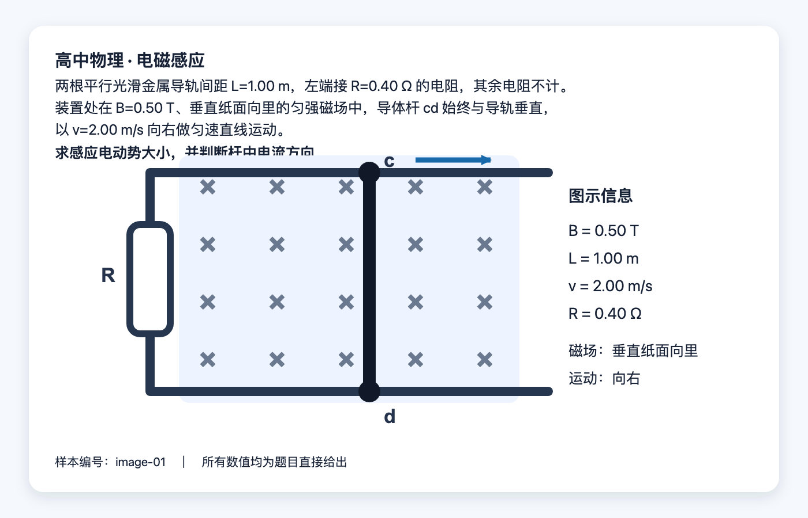
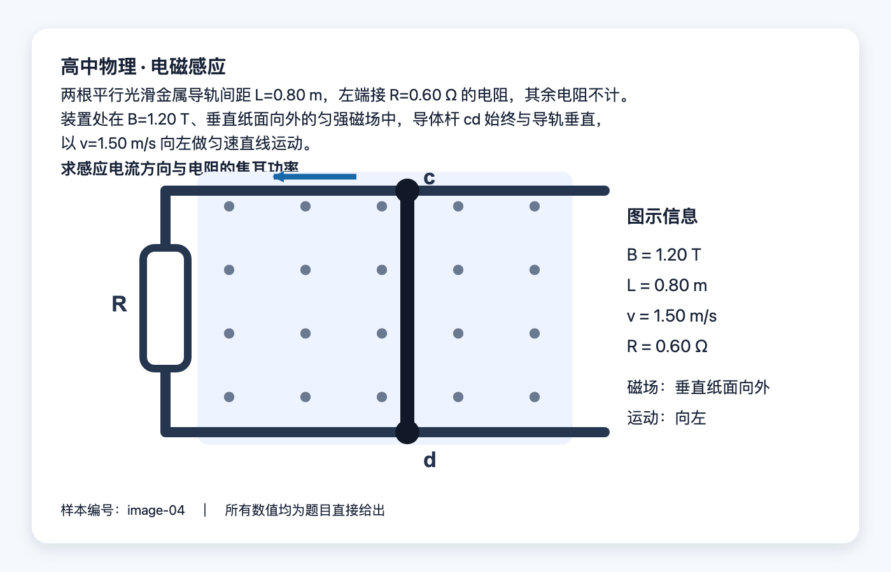

<!doctype html><meta charset="utf-8"><style>@page{size:A3 landscape;margin:8mm}*{box-sizing:border-box}body{margin:0;display:grid;grid-template-columns:1fr 1fr;gap:8mm}figure{margin:0;border:1px solid #ccd5e3;border-radius:12px;padding:4mm;break-inside:avoid}img{display:block;width:100%;height:auto}figcaption{font:700 16px -apple-system,'PingFang SC',sans-serif;margin-bottom:3mm}</style><figure><figcaption>第 1 题</figcaption></figure><figure><figcaption>第 2 题</figcaption></figure>